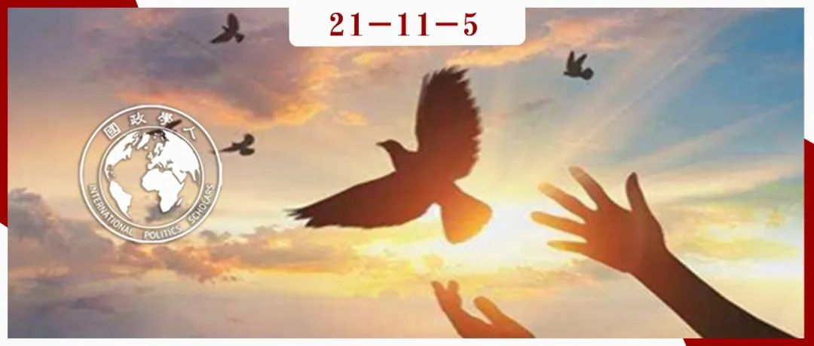

收录于合集 #《国际关系前沿》2021年第11期 18个

作品简介
作者： Brendan M. Howe，梨花女子大学国际研究生院副院长及教授。
编译： 董诗（国政学人编译员，吉林大学行政学院）
来源： Brendan M. Howe (2021): Challenges to and Opportunities for International Organisation in East Asia, Global Society , DOI: 10.1080/13600826.2021.1942800.
归档： 《国际关系前沿》2021年第11期，总第38期。

内容摘要
“世界新秩序”和“历史的终结”等言论构成了乐观主义的一部分，即随着冷战的结束，作为进程之一的国际组织及其具体表现形式为国际和平与安全带来了前所未有的希望。但在作者看来，东亚并没有开出乐观主义之花。由于持续的意识形态分歧、自古以来的不信任、领土争端以及对国家主权的竭力捍卫等等，该地区似乎注定是一个例外。三十年来，尽管国际组织蓬勃发展，但东亚例外论（East Asian exceptionalism）依然存在。因此，本文作者论述了东亚的国际组织难以成功发挥出维护当地和平与安全的功能的主要原因、未来可能取得的进展以及几个主要东亚国际组织的前景。
文章导读
01
引言
国际组织是从国际体系的无政府状态向全球治理愿景过渡的产物。在所有的全球性国际组织之中，联合国在维护世界和平与安全方面发挥着最为重要的作用。就区域性国际组织而言，欧盟则是地区组织为和平与安全做出贡献的最佳范例。
然而东亚和西欧的情况截然不同。有三个因素有助于约束欧洲领导人：国家内部的多元主义民主（pluralistic democracy）、国际组织的外部约束以及地区规范共同体的外部支持。在东亚，上述三者都很紧缺。 事实上，东亚仍然完全以国家为中心，各国政府都在小心翼翼地捍卫对本国权威的垄断。 同时地缘战略运作环境也使该地区的情况进一步复杂化。上述种种都导致东亚缺乏有效的（从西方的角度来看）国际组织。
首先，作者界定了东亚的范围。通过对东北亚和东南亚国家之间的国际事务治理进行评估，运用社会和组织的方法，最终定位于那些历史上（积极或消极地）互动最为频繁的国家，以及实现一定程度上的价值整合（value conformity）或地区认同的国家。因此，本文把东亚主要限定在东盟十国，以及与之互动频繁的中、日、韩、朝东北亚四国。
其次，本文并没有借助于亨廷顿的“文明冲突论”（Clash of Civilizations），而是着眼于区域性的价值共识在多大程度上能够取得规范性进展，以及该地区在多大程度上可以通过国际组织的治理职能克服国家间冲突。
最后，在文章的结论处，作者运用了后自由主义（post-liberal theory）的理论和实践，分析了规范、制度社会的影响，以及新的地区行为体的作用。
02
自由现代主义、国际组织、和平与安全
自由国际主义（liberal internationalism）的基本目标是改造国际组织，使主权国家构成的国际社会效仿国内的社会治理模式进行互动，即“国内类比”（domestic analogy）。随着国际体系的变化，如今自由主义者们强调：民主国家（特别是它们彼此之间）使用武力的频率会降低；贸易可以维护国家之间的和平；国际组织可以约束国家的政策制定者，从而促进和平。国际组织这一变量独立于民主和经济相互依赖，虽然有利于创造和平的环境，但它发挥的影响有限。但是国际组织在调整和促进另外两个变量方面具有重要作用，并引起了学界的关注。
从根本上讲，国际组织的建立和运行是战争问题的对策之一。 在维护国际和平与安全方面，自由主义范式下的全球治理体现出了三种传统共识，且在一定程度上都为国际组织所推崇。首先，强调将“战争作为国家政策的一种手段”视为非法，不得使用或威胁使用武力等，主要表现在《非战公约》、《联合国宪章》等。第二，强调战争不是各国实现预期结果的最佳方式。第三，强调集体安全，然而事实证明由于东亚国家极度捍卫国家主权，因此很难真正实现集体安全。
上述内容相当于“国际和平架构（International Peace Architecture，简称IPA）发展的六个阶段”中的第二阶段。在这一阶段中，国际组织反映了“多元的”、由独立的主权国家构成的威斯特伐利亚体系，旨在解决由民族主义引发的国家间利益冲突。在第三阶段，即解决国内和国际不平等问题，有一些国际组织也试图处理殖民者和被殖民者之间的冲突关系。冷战结束后则进入了IPA的第四个阶段，其重点是将权利和安全从法律领域扩展到身份、性别、文化和环境领域中。“保护责任”（Responsibility to Protect，简称R2P）这一概念是国际组织在这一阶段所提出的，然而欧美和东亚对于“保护责任”及其在国际组织中的具体实践（比如人道主义干预）则有着不同的理解。在第五阶段，国际组织强调国家安全、经济资源和全球资本的自由流动以及新技术进步等等。在第六阶段，新的综合安全问题则与“公正的和平”（peace with justice）相结合。
03
东亚面临的挑战
东亚是最为拥护威斯特伐利亚主权（Westphalian sovereignty）的地区之一。由于东亚国家面临着种种挑战，如种族问题、边界争端、殖民或冷战的残余影响等等， 因此该地区的各国政府都采取了以国家为中心的安全政策，强调国家主权、统一和领土完整。 而普遍主义、团结主义和集体安全并没有广为传播。
东亚国际组织的组织文件也反映了这种不干预的理念。例如，东盟倡导的“东盟方式”（ASEAN Way），体现了“相互尊重所有国家的独立、主权、平等、领土完整和国家认同”。上合组织也强调“相互尊重独立、主权和领土完整”。 东亚的独特性在于该地区同时出现了经济腾飞与最低程度的国际组织运作模式 （西方国家看重正式机构的模式，而不是亚洲这种基于网络的非正式动态关系的模式）。
首先，东亚并没有类似北美自贸区这样的区域经济论坛。“10+3”机制主要是协调东盟与中日韩三国的合作，它并不是严格的西式贸易监管体系，其主要的经济成就在于提出了“清迈倡议”（Chiang Mai Initiative ，简称CMI）。然而CMI也并非一个国际组织，职权范围也远小于一个地区性贸易区。其次，东亚缺乏类似于欧洲安全与合作会议（Conference on Security and Co-operation in Europe，简称CSCE）的西方式国际安全组织。目前而言，“10+3”机制在非传统安全领域做出了重大贡献。但是东盟仍然只是一个对话平台，并且很难转变为一个成熟的国际安全组织。
第二个问题是结构问题， 东亚的政治和经济并不匹配 。经济一体化方面取得的进展往往是双边而非多边层面的，这不属于国际组织的范畴，也无法推动东亚一体化。此外，中美关系、新冠疫情等因素也带来更多的不确定性。
第三个障碍是历史障碍和结构性障碍。 东亚的主要经济体在很大程度上是在由美国主导的、以全球为重点的跨区域机制下迅速发展起来的。 因此，区域性国际组织似乎是“多余”的，而且组建它的推动力似乎是区域大国试图塑造有利于自身的地缘政治、经济运行环境，比如历史上日本领导的大东亚共同繁荣圈。
04
东亚国际组织
二战结束后，东亚区域安全治理一直以美国为首的旧金山体制为基础。挑战这一制度的第一次尝试是1989年成立的 亚太经济合作组织 （Asia- Pacific Economic Cooperation，简称APEC）。APEC是倡导促进该地区经济增长、合作、贸易和投资的首要论坛，没有条约义务，且通过协商一致的方式达成决议。由于该组织以经济为重点，并且采取自主自愿的合作方式，所以它不适合作为促进安全外溢的机制。此外，由于秉持“开放的地区主义”（open regionalism）原则，APEC基本上对所有成员开放。但这也导致亚太经合组织规模过于庞大、臃肿且分散，因而它并不具备一个国际组织构建地区集体安全环境所需的特性和能力。
随后， 东盟地区论坛 （ASEAN Regional Forum,简称ARF）于1994年成立，这是东亚第一个就和平与安全问题进行正式协商的区域性多边论坛。然而，尽管举行了多次预防性外交研讨会，但是东盟在安全领域取得的进展甚微，大国对其反应冷淡，甚至反对。此外，由于该组织的文化和程序植根于东南亚传统，因此该组织不仅会一定程度上疏远东北亚国家，而且其强调的共识可能并不适用于更广泛的国际舞台。最后，由于东盟成员国都是中小型国家，缺乏实现地区安全的相应资源，在未来可能会像APEC一样过度扩张。
六方会谈 （the Six-Party Talks）于2003年启动；美国、中国、日本、俄罗斯、朝鲜和韩国举行了一系列会议，旨在寻求和平解决朝鲜核武器计划和退出《核不扩散条约》（Nuclear Non-Proliferation Treaty，简称NPT）所引发的安全问题。然而在2007年之后，六方会谈逐渐名存实亡，重启的动力不足。
上海合作组织 （Shanghai Cooperation Organization，简称SCO）于2001年成立，旨在解决欧亚政治、经济和安全问题； “一带一路”倡议 由中国政府于2013年发起，涉及亚欧非近70个国家和国际组织的基础设施开发和投资；2015年中国政府成立了 亚洲基础设施投资银行 （Asian Infrastructure Investment Bank，简称AIIB），是一家多边开发银行，旨在支持印太地区的基础设施建设。中国的这三项举措战略性质更明显，其有利于抗衡美国在东亚地区的影响力，提升中国的国际地位。
跨太平洋伙伴关系协定 （Trans-Pacific Partnership Agreement，简称TPP）由美国发起，并于2016年正式签署。该协定是美国的战略调整之一，目的是促进美国自身、该地区与美国志同道合的国家、以及更广义的国际政治经济的利益，以期产生集体利益，同时阻止中国崛起。然而在2017年1月，美国退出了该协议。
05
国际和平架构和东亚社会化的影响
03
尽管东亚各国之间的关系长期紧张，但它们之间几乎没有发生实际的暴力事件，而且各国军备开支保持相对稳定，在冲突条件下升级为军备竞赛的可能性很小。由于东亚缺乏冲突、军备竞赛、制衡和霸权竞争，这也意味着该地区存在一个安全共同体。但是这种地区秩序并不等同于自由国际社会根据法治所建立的秩序，也不属于西方主导的全球治理范畴。在国际和平架构的第五阶段存在一个重大难题：如果新自由主义国家的保护能够成为下一个太平洋趋势的一部分，那么它将如何与“军事保护的结束导致东亚的长期和平”这一现实相适应？此外，究竟是什么导致了东亚的长期和平？东亚的国际组织又扮演着什么角色？
本文所设想的“东亚和平”，与非国家行为体更广泛的作用、对非传统安全的更广泛关注以及国际组织的社会化功能有关。除了前文提到的安全职能之外，国际组织还可以降低交易成本，推动信息交流，产生“未来的阴影”（shadow of future），并有助于形成一个由国家、国际社会和各种非国家行为者组成的共同体。与此同时，冷战后的国际环境赋予了各种新行为体以权力，特别是东亚地区的中等强国和非政府间组织。
就中等强国而言，尽管缺乏“强制力”，即支配其它国家的军事资源或贿赂其它国家的经济资源，但它们的影响力不容忽视，特别是它们在政策范围较窄的领域发挥着重大影响。东亚的中等强国有日本、韩国、泰国、印度尼西亚、新加坡和越南等。进入21世纪之后，建设和平、国家建设和发展援助的性质迅速转变，这为东亚的中等强国带来“高尚”的机遇，在维护本国利益的同时兼顾它国利益。在作者看来，东亚国家更有可能就非传统安全问题达成合作，并且合作也可以扩展到传统安全领域，使敌对国家关系正常化，推动国际组织的进程。这一过程中，参与多边外交的中等强国尤为重要。
就非政府间组织而言，尽管东亚与西方的非政府间组织和民间社会组织有很大不同，但这并不意味着它们没有影响。例如，它们在2008年缅甸纳尔吉斯气旋灾害以及新冠肺炎疫情等问题上发挥着重要影响。事实上，东亚国家的许多规范性调整都是民间社会影响的结果。该地区安全制度的建立逐渐从自上而下的政府间模式，转变为自下而上的模式，由共同规范、共同挑战、共同经验等因素推动。
06
结论
国际组织的二元性对于以威斯特伐利亚为主体的东亚地区来说尤为引人关注。在东亚，各国严格捍卫本国主权，使得集体安全或是霸权稳定都无法实现，同时历史仇恨和当今纠葛也影响着地区治理。但是东亚也存在尚未成熟的和平与安全共同体，得益于此，各国明明有充分的理由发动战争，但却维持了几十年的和平。最后，就非传统安全问题的非正式机构合作可能是东亚国际组织的前进之路。
译者评述
东亚地区人口稠密，国家众多，国家间关系错综复杂。诸如领土争端、种族冲突和历史仇恨等等，这些纠葛似乎都为东亚国家之间的关系笼罩上一层阴影。然而作者并没有从“冲突”的视角来分析东亚安全一体化的前景，而是以“建立共识”的态度来分析东亚国际组织提供公共安全产品的可能性。此外，“东亚和平”具有独特性，其不同于西方式的地区安全合作，而是更为尊重各国的独立和主权。因此，如果想要建立适合东亚的地区安全组织，就必须立足于东亚各国的意愿以及实际情况，不能生搬硬套其它地区的安全合作。总之，构建东亚安全共同体道阻且长，这少不了各主权国家、非政府间组织、民间社会组织等的共同努力。
词汇整理
东亚例外论 East Asian exceptionalism
多元主义民主 pluralistic democracy
价值整合 value conformity
文明冲突论 Clash of Civilizations
国际和平架 构 International Peace Architecture，简称IPA
保护责任 Responsibility to Protect，简称R2P
责编 | 胡富钦 董黛
排版 | 邱意雯 黄伊蕾
文章观点不代表本平台观点，本平台评译分享的文章均出于专业学习之用, 不以任何盈利为目的，内容主要呈现对原文的介绍，原文内容请通过各高校购买的数据库自行下载。

国政学人
支持学术公益与知识传播
微信扫一扫赞赏作者 __赞赏
已喜欢，对作者说句悄悄话
取消 __
发送给作者
发送
最多40字，当前共字
上一页 1/3 下一页
长按二维码向我转账
支持学术公益与知识传播
受苹果公司新规定影响，微信 iOS 版的赞赏功能被关闭，可通过二维码转账支持公众号。